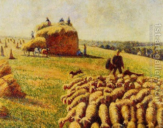

Zevachim 10 - Thinking Ahead
What happens if one slaughters an animal with the proper intent, that is, he knows what kind of sacrifice it is, but at the same time thinks that when doing the following step of the service - throwing the blood on the Altar - he will have the intention that it is a different type of sacrifice? What effect does this have on the sacrifice, even if he does not fulfill his intent later?
Resh Lakish says that it is valid, but Rabbi Yochanan says that such a sacrifice is invalid. Rabbi Yochanan says that it is invalid, because he subscribes to the following principle: one can effectively "think ahead," that is, that an intention that the kohen has for the following step of the service can affect what he is doing now. This result comes out because Rabbi Yochanan compares the intention that changes the type of sacrifice to the intention that changes its proper time or place, about which we will learn that it indeed disqualifies the offering. Resh Lakish holds that future intent does not count and considers the offering still valid.
Art: Camille Pissarro : Flock of Sheep in a Field after the Harvest